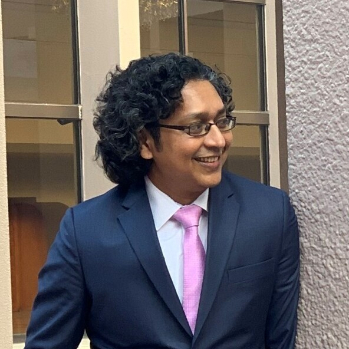

Project Council

John Drake (Principal Investigator)
John Drake is Regents Professor in the Odum School of Ecology and Director of the Center for the Ecology of Infectious Diseases (CEID) at the University of Georgia. He also directs the Global Infectious Disease Intelligence Consortium (GIDIC). Drake is a leading expert in modelling the dynamics of biological populations and epidemics, and has studied the emergence and spread of numerous infectious diseases, including White-nose syndrome in North America, Ebola in Africa, and SARS-CoV-2 globally.
Read more

Justin Bahl
Justin Bahl is an Associate Professor at the University of Georgia with a joint appointment in the College of Public Health (Department of Epidemiology & Biostatistics) and College of Veterinary Medicine (Department of Infectious Diseases). He is also a member of the Institute of Bioinformatics, the Center for the Ecology of Infectious Diseases, and the Center for Vaccines and Immunology at UGA. Bahl leads the Center for Applied Pathogen Epidemiology and Outbreak Response, a CDC Pathogen Genomics Center of Excellence (PGCoE).
Read more

Bogdan Epureanu
Bogdan I. Epureanu is an Arthur F. Thurnau Professor in the Department of Mechanical Engineering at the University of Michigan and has a courtesy appointment in Electrical Engineering and Computer Science. He is the Director of the Automotive Research Center (ARC), a $50 million center for innovating cutting-edge technologies that serve the next generation of ground transportation systems. The ARC is the flagship academic partner of the U.S. Army Ground Vehicle Systems Center, and at the heart of an ecosystem of research and education.
Read more

Barbara Han
Dr. Barbara Han is a disease ecologist at the Cary Institute of Ecosystem Studies (NY). Her research program at the Cary Institute uses machine learning, deep learning, ecoinformatics, and dynamical modeling approaches with the goal to generate actionable predictions about infectious disease spillover and disease transmission in human and animal species.
Read more

Glen Nowak
Glen Nowak is Professor of Advertising and Co-Director of Center for Health and Risk Communication in the Grady College of Journalism and Mass Communication at the University of Georgia. Prior to joining the Grady faculty in January 2013, he worked for 14 years at the Centers for Disease Control and Prevention as Director of Media Relations and as communications director for CDC’s National Immunization Program. He has experience in managing and implementing health and risk communications programs, media relations, health information campaigns and social marketing.
Read more

Pejman Rohani
Pejman Rohani is Regent’s Professor and Associate Dean for Academic Affairs in the Odum School of Ecology, University of Goergia. He also holds a joint appointment in the College of Veterinary Medicine (Department of Infectious Diseases). Rohani serves as Deputy Director of the Center for Influenza Disease and Emergence Research, an international consortium based at the University of Georgia that integrates human cohort studies with state-of-the-art fundamental research.
Read more
Senior Personnel

Michael Cacciatore
Michael Cacciatore is an Associate Professor of Public Relations Center for Health and Risk Communication in the Grady College of Journalism and Mass Communication at the University of Georgia.
Read more
Amin Ghadami
Amin Ghadami is a Research Assistant Professor at the Sonny Astani Department of Civil and Environmental Engineering, University of Southern California. He received his PhD in Mechanical Engineering from the University of Michigan-Ann Arbor in 2019 and was a postdoctoral research fellow at the University of Michigan before joining the University of Southern California in 2023. He also earned his M.Sc. in Mechanical Engineering from Sharif University of Technology (2013) and B.Sc. in Mechanical Engineering from Isfahan University of Technology (2011).
Read more

Ellie Graeden
Ellie Graeden a Research Professor with the Georgetown University Center for Global Health Science and Security. Graeden spent the last decade establishing and leading a private company, Talus Analytics, designing and building data products to solve challenging problems at the intersection of policy, science, and strategy.
Read more
Other Personnel

Kerri-Ann Anderson (Postdoctoral Associate)
Kerri-Ann Anderson is a postdoctoral associate working with Dr. John Drake. Her past research utilized mathematical and computational models of cultural evolution to simulate the evolution of vaccine belief-behavior interactions. Using cultural evolutionary frameworks, she has examined the effects of individual- and population-level vaccination beliefs and behaviors as well as the effects of decision-making biases, changing social networks, and influencer strength on vaccine culture disease risk.
Read more

Sakil Faizullah (PhD Student)
Sakil Faizullah worked for the BBC and the United Nations before coming to Grady College at the University of Georgia to pursue his PhD. Building on 23 years working in the communications industry, Faizullah’s current research focuses on finding communication tools that can help bring underprivileged population groups into a global conversation.
Read more
Ali Ghadami (PhD Student)
Ali Ghadami is a PhD student at the Univeristy of Michigan working with Bogdan Epureanu.

John King (Project Manager)
John King is Projects and Communications Manager with the Center for the Ecology of Infectious Diseases (CEID) and Global Infectious Disease Intelligence Consortium, Odum School of Ecology at the University of Georgia. In these roles, John works with both internal and external customers to promote the CEID’s zoonotic research and infectious diseases modeling capabilities to help clients solve real-world challenges.
Read more

Éric Marty (Data Visualization)
Éric Marty is a Research Professional in the Center for the Ecology of Infectious Diseases (CEID) and Odum School of Ecology, University of Georgia, and Digital Arts Fellow with UGA’s Willson Center for Humanities and Arts. Marty’s research interests include data visualization, data sonification, and multi-modal data representation. He is concerned with optimizing data representation for exploration, analysis, and communication, and with high-dimensional and time-based data where standard visualization tools often fall short.
Read more

Hailey Robertson
Hailey Robertson is a Data Research Analyst at the Data Lab in the Center for Global Health Science and Security, Georgetown University. As part of the Data Lab, Robertson works across projects at the intersection of infectious disease, health policy, and computing, with a focus on transforming complex data into actionable insights for decision-makers.
Read more

Sukanta Sarkar (Postdoctoral Associate)
Sukanta Sarkar is a postdoctoral associate working with Dr. John Drake. In this role, he is focused on mathematical modeling of living systems with theoretical descriptions of various biological phenomena.
Read more
Minsun Shim (MSc Student)
Minsun Shim is a MSc student at the University of Southern California working with Amin Ghadami.

Tess Stevens
Tess Stevens is a user experience designer at Talus Analytics focused on creating visuals that allow data to be thoughtfully investigated. Her work is informed by her interest in systems design, her background in writing and editing, and her commitment to clarity and functionality.
Read more

Garrick “Guppy” Stott (PhD Student)
Garrick Stott is a PhD student in the lab of Dr. Justin Bahl, College of Public Health at the University of Georgia. Stott’s research focuses on SARS-CoV-2 and influenza phylogenetics. Stott studied mathematics at Clemson University and earned a master’s degree in statistics from North Carolina State University while working as a data scientist for TIAA.
Read more

Madison Wilson (Administrator)
Madison Wilson is the Administrative Specialist for the Center for the Ecology of Infectious Diseases (CEID), Odum School of Ecology at the University of Georgia. In this role, she supports the CEID’s internal and external communications for scientific and public audiences; works with Odum School of Ecology faculty and staff to plan and execute teaching and research objectives; and manages and develops CEID budgets.
Read more

Ryan Zimmerman
Ryan Zimmerman is a researcher and full stack developer, combining technical implementation skills with a BA in economics to build visualizations and user interactions which explore data in an actionable and accurate way while championing accessibility.
Read more